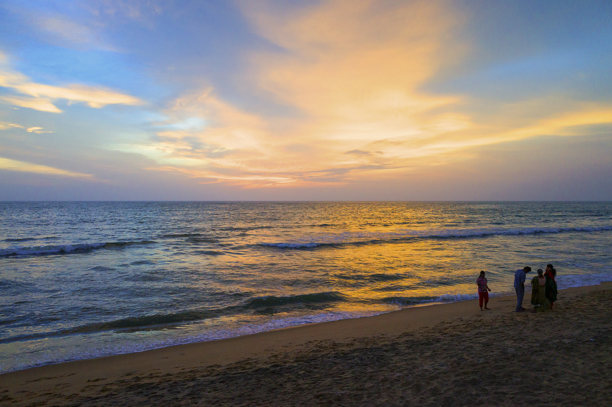

Ernakulam
Ernakulam is a sprawling metropolis that beautifully combines its natural wonders with providing a base for a majority of the State’s business enterprises. Flanked by the Arabian sea, it is easily among the most visited locations in Kerala. It is an extremely important commercial centre but also has a plethora of destinations for tourists to enjoy. The city of Kochi, with its fine natural harbour, is the undisputed crown jewel of the district. From historic locations that transport you to a time when it acted as the commercial hub of the legendary Spice Route to exotic trips on boats where one can simply relax and soak in the weather, Kochi never disappoints. Ernakulam has always epitomized the Malayali spirit of welcoming all who visit it and this tradition continues to this day.
TOURIST ATTRACTIONS

Bolgatty Palace
While making a bucket list of places to visit in Kochi, Bolgatty Palace and Island resort is a must. This unique mansion with four palatial rooms was built by the Dutch in 1744 and is one of it’s kind outside Holland. The palace has been now converted to a luxury stay for travellers pampering them to ultimate comfort and grandeur.

Cherai Beach
This charming beach is neatly nestled in the suburbs of Cherai, which is one of the most visited beaches due to its serenity and clean environ. The low tides and slow waves make it a highly recommended beach for swimming and other forms of water sports. It has an alluring walkway along the beach dotted with greens and sufficient places for seating.

Fort Kochi
A small fishing hamlet later converted to the first European township in India, today features amongst Kochi tourist places due to the vibrancy of this place. The temperature is more or less pleasant round the year except for summer making it ideal to explore the place in a motorcycle to navigate the deepest history and beauty of this place.